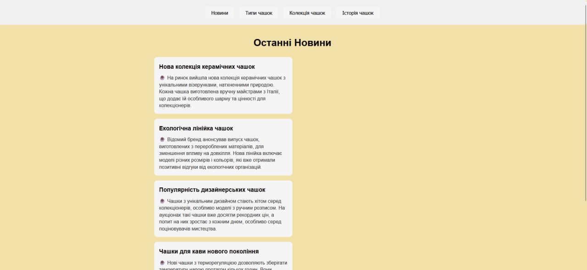
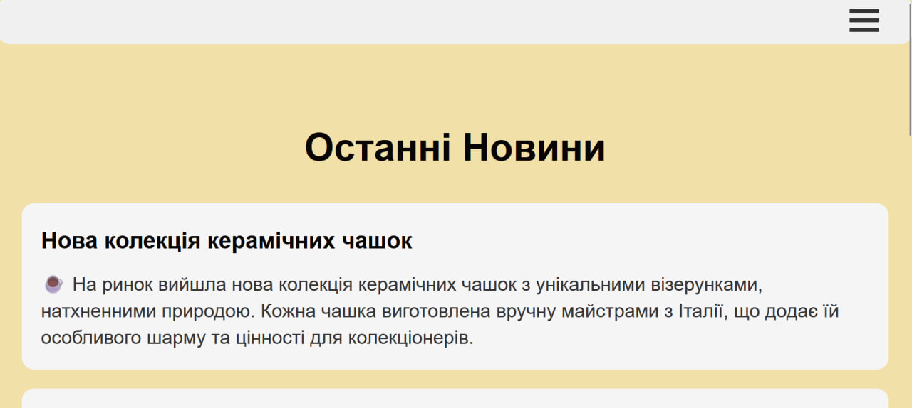

Практична робота №3
Оберіть розділ ліворуч, щоб переглянути вміст.
Тема: ВЕРСТКА HTML-ДОКУМЕНТУ. БЛОКОВА ВЕРСТКА. ВЕРСТКА ЗАСОБАМИ CSS та FLEXBOX. АДАПТИВНА ВЕРСТКА. МЕДІА-ЗАПИТИ. МЕТАТЕГ VIEWPORT
Мета:
- придбати практичні навички роботи верстки сторінок засобами CSS, верстки на основі плаваючих елементів, з’ясувати переваги та недоліки типів макетів веб-сторінок
- придбати практичні навички роботи верстки сторінок засобами CSS та FLEXBOX.
Посилання на репозиторії:
Посилання на живі сторінки:
ЗАВДАННЯ №1: Опис макету власного сайту
Мій сайт ("Світ Чашок") використовує комбінований (гібридний) адаптивний макет.
- Він поєднує фіксований потік (де контент центрується) з гнучкою сіткою (Flexbox) для розміщення карток.
- Семантична верстка: Використані теги
<header>,<nav>,<main>та<footer>для чіткої структури. - Адаптивність: Завдяки медіа-запитам (media queries) та **відносним одиницям (`rem`, `em`, `%`), макет перебудовується для планшетів та смартфонів.
- Навігація: На десктопі використовується стандартне горизонтальне меню, яке на мобільних пристроях трансформується у "бургер-меню".
Зовнішній вигляд головної сторінки (Десктоп)
Скріншот демонструє вигляд головної сторінки, реалізованої за допомогою Flexbox.
ЗАВДАННЯ №2: Приклади верстки
Оберіть підпункт для перегляду прикладів верстки макетів.
Фіксована таблична верстка (Варіант 6)
Верстка виконана за допомогою таблиці з фіксованою шириною (наприклад, width: 700px).
| Блок 1 (Header) Чашки: Наша Історія |
||||||
| Блок 2 Стародавні |
Блок 3 Керамічні |
Блок 4 Скляні |
Блок 5 Сучасні |
|||
| Блок 6 (Footer) Контакти |
||||||
Гумова таблична верстка (Варіант 6)
Верстка виконана за допомогою таблиці з відносною шириною (width: 100%). Колонки також мають ширину у відсотках.
| Блок 1 (Header) Чашки: Наша Історія |
||||||
| Блок 2 Стародавні |
Блок 3 Керамічні |
Блок 4 Скляні |
Блок 5 Сучасні |
|||
| Блок 6 (Footer) Контакти |
||||||
Фіксована блокова верстка (Варіант 7)
Верстка виконана за допомогою блоків <div> з фіксованою шириною (width: 700px) та властивістю float.
Про наші чашки...
Гумова блокова верстка (Варіант 7)
Верстка виконана за допомогою блоків <div> з відносною шириною (width: 100%) та властивістю float.
Про наші чашки...
ЗАВДАННЯ №3: FLEXBOX
Весь мій сайт ("Світ Чашок") побудований з використанням Flexbox для створення адаптивного макету, як того вимагали завдання. Нижче наведено код головної сторінки (`index.html`) як приклад реалізації.
Зовнішній вигляд сторінки (Адаптивність)
Скріншот мобільної версії головної сторінки, де видно, як меню перетворилося на "бургер", а картки новин (які використовують Flexbox) перебудувалися в один стовпець.
HTML-код (index.html)
HTML-код головної сторінки з семантичними тегами <header>, <nav>, <main>, <footer> та контейнером .news-container для Flexbox.
<!DOCTYPE html>
<html lang="uk">
<head>
<meta charset="UTF-8">
<meta name="viewport" content="width=device-width, initial-scale=1.0">
<title>Новини</title>
<meta name="author" content="Kyrylo Vorobiov">
<link rel="stylesheet" href="styles.css">
<script src="scripts.js"></script>
</head>
<body>
<!-- Семантична шапка -->
<header>
<!-- Бургер-меню (для мобільних) -->
<div class="burger-menu">
<div></div>
<div></div>
<div></div>
</div>
<!-- Навігація -->
<nav class="main-nav" id="menu-container"></nav>
</header>
<!-- Семантичний основний вміст -->
<main>
<h1>Привіт!</h1>
<div class="news-container">
<div class="news-block">
<h3>Нова колекція керамічних чашок</h3>
<p>На ринок вийшла нова колекція...</p>
</div>
<div class="news-block">
<h3>Екологічна лінійка чашок</h3>
<p>Відомий бренд анонсував випуск чашок...</p>
</div>
<div class="news-block">
<h3>Популярність дизайнерських чашок</h3>
<p>Чашки з унікальним дизайном стають хітом...</p>
</div>
<div class="news-block">
<h3>Чашки для кави нового покоління</h3>
<p>Нові чашки з терморегуляцією дозволяють...</p>
</div>
</div>
</main>
<!-- Семантичний підвал -->
<footer>
<p>© 2025 Світ Чашок. Усі права захищено.</p>
<p>Виконавець: Воробйов Кирило, група ІА-32</p>
</footer>
</body>
</html>CSS-код сторінки (styles.css)
CSS-код містить стилі для Flexbox (`.news-container`), а також медіа-запити (`@media`) для адаптивної перебудови.
/* --- Загальні стилі та відносні одиниці (rem) --- */
html { font-size: 16px; }
body {
font-family: Arial, sans-serif;
font-size: 1rem;
line-height: 1.6;
background-color: #ffffff;
margin: 0;
padding: 1.25rem;
padding-top: 5.625rem;
}
/* ... (інші загальні стилі) ... */
/* --- Семантика: Шапка (Header) та Навігація --- */
header {
display: flex;
gap: 1rem;
width: 100%;
justify-content: center;
align-items: center;
padding: 1.25rem;
background-color: #f0f0f0;
border-radius: 0.625rem;
position: fixed;
top: 0;
left: 0;
z-index: 1000;
box-sizing: border-box;
}
nav.main-nav {
display: flex;
gap: 1rem;
}
/* ... (стилі кнопок) ... */
/* --- Семантика: Основний контент (Main) --- */
main {
max-width: 900px;
margin: 1.25rem auto;
}
/* --- Семантика: Підвал (Footer) --- */
footer {
text-align: center;
padding: 1.25rem;
margin-top: 2rem;
border-top: 1px solid #ccc;
color: #777;
font-size: 0.9rem;
}
/* --- Бургер-меню (для мобільних) --- */
.burger-menu { display: none; /* ... */ }
.burger-menu div { /* ... */ }
/* --- Сторінка Новин (FLEXBOX) --- */
.news-container {
display: flex;
flex-direction: column;
gap: 1rem;
width: 100%;
}
.news-block {
background-color: #f5f5f5;
border-radius: 0.625rem;
padding: 1rem;
width: 50%;
box-sizing: border-box;
}
/* ... (інші стилі новин) ... */
/* --- Адаптивність (Media Queries) --- */
@media (max-width: 768px) {
/* ... (стилі для бургер-меню) ... */
nav.main-nav { display: none; /* ... */ }
nav.main-nav.active { display: flex; /* ... */ }
.burger-menu { display: block; /* ... */ }
/* Адаптивна сітка */
.news-block {
width: 100%; /* Картки новин на всю ширину */
}
.type-wrapper, .collection-wrapper {
flex-direction: column;
}
.type-block, .collection-block {
width: 100%;
}
/* ... (інші стилі адаптивності) ... */
}
ВИСНОВКИ
Під час виконання цієї практичної роботи я здійснив повний рефакторинг свого проєкту, перевівши його на семантичну верстку з використанням тегів <header>, <main> та <footer>.
Я здобув практичні навички у верстці сторінок за допомогою різних методик, реалізувавши приклади фіксованої та гумової верстки на таблицях та блоках (float).
Найголовніше, я освоїв Flexbox, застосувавши його для створення гнучкої та адаптивної сітки контенту на своєму сайті. Завдяки медіа-запитам та відносним одиницям (`rem`), сайт тепер коректно відображається на десктопних та мобільних пристроях. Також була реалізована адаптивна навігація з "бургер-меню".